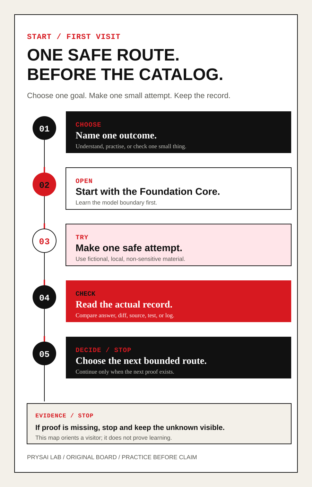
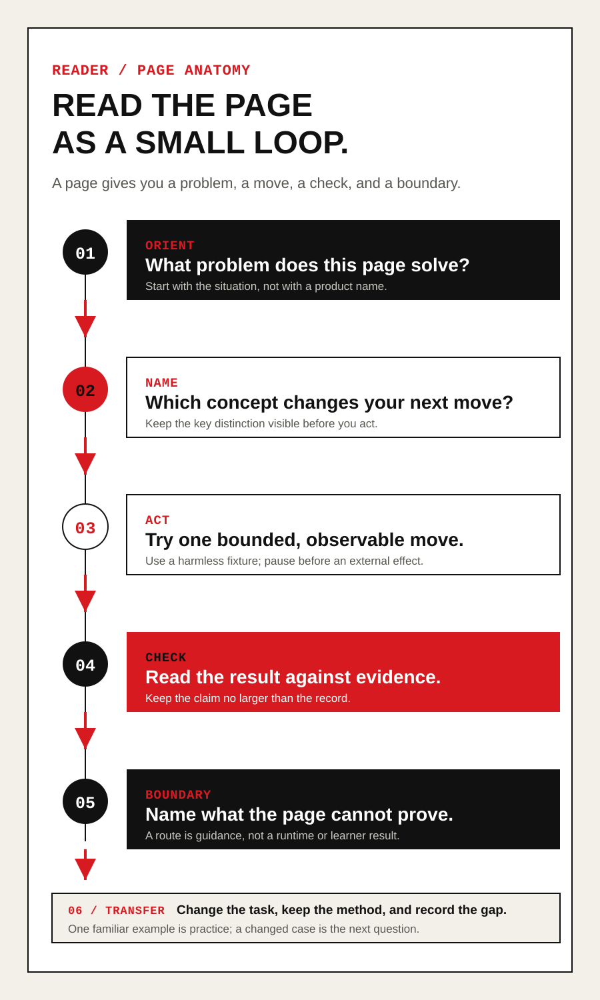

A picture should answer the next question.
See the method before you read the detail.
This guide turns the Playbook's core loop into a route you can inspect: understand, frame, act, inspect, repair, and transfer.
The boards are orientation aids. The localized text and the source page remain the baseline explanation; a picture does not prove that a model acted or that a learner mastered a method.
Start from your question
Choose a reason, not a random page.
Pick the situation that brought you here. The map suggests one bounded next step and one visual explanation instead of sending you into the full catalogue.
Next question

Open the route visualRead the four entry points as text
The same choices remain available as a short list when the map cannot run.
- 01 · Start safelyUse a fictional offline task and keep the first response as your baseline.Open this route ↗
- 02 · Check an uncertain resultPreserve the output, compare it with evidence, and keep the claim inside the record.Open this route ↗
- 03 · Verify a claimBound the claim, name the source, run the smallest check, and record the limit.Open this route ↗
- 04 · Reuse the methodRepeat the method on a new task; one successful attempt is not mastery.Open this route ↗
Dynamic route map
Choose a stage, then ask one question.
Select a node to see the action, the evidence boundary, and the next safe question. The ordered list below keeps the route available without interaction.
Next question
Open this part of the routeRead the six stages as text
Use this ordered route without the interactive map. Each stage names an action and the evidence boundary that follows it.
- 01 · UnderstandSeparate a model proposal from what the available evidence can establish.Open this part of the route ↗
- 02 · FrameState the goal, context, allowed help, limits, check, and stop condition.Open this part of the route ↗
- 03 · ActAllow only the smallest reversible action and pause before an external effect.Open this part of the route ↗
- 04 · InspectCompare the output or diff with a source, test, log, or acceptance rule.Open this part of the route ↗
- 05 · RepairName one mismatch, preserve the failed receipt, and change one condition before retrying.Open this part of the route ↗
- 06 · TransferRepeat the method on an unseen task; one successful attempt is not mastery.Open this part of the route ↗
Teaching boards
Pictures that explain one decision at a time.
Each board has a short explanation, a localized alternative text, and a route into the matching lesson. Open the image when you want the printable version; use the text beside it when you want the exact boundary.
Open more teaching boards
These additional boards cover source checks, handoffs, stopping decisions, and the reading loop. They are optional references, not a second course route.
This is a focused selection from the project-authored teaching boards. It is not a quality score, benchmark, or proof of learning.
Read the picture correctly
Use a board without overtrusting it.
The board gives you a shape to remember. Your own small attempt and record decide what you may claim.
- 01Start with the thesis
Name the relationship or decision the picture is meant to clarify.
- 02Open the text fallback
Read the labels and next question in ordinary text; do not rely on color or layout alone.
- 03Try one bounded move
Use the linked lesson to make one small, reversible attempt with a clear stop condition.
- 04Keep the boundary visible
Save the output or diff, compare it with evidence, and state what the picture still cannot establish.

Open full-size visual